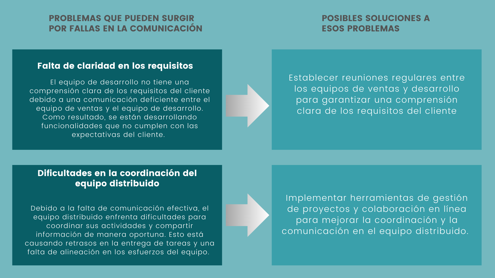
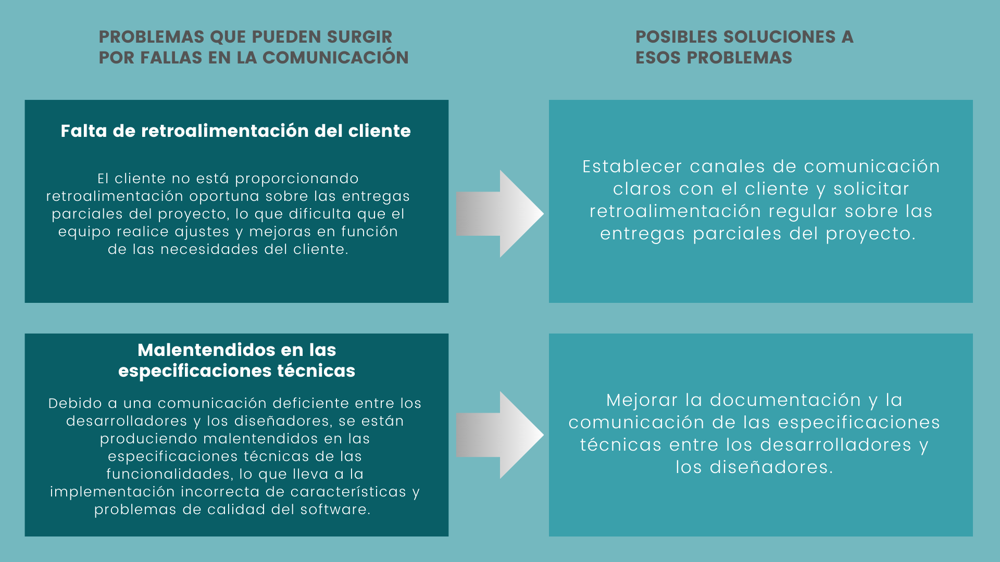

Una empresa de desarrollo de software está trabajando en un proyecto importante para un cliente.
El equipo está distribuido en diferentes ubicaciones geográficas y se comunica principalmente a través de reuniones virtuales y herramientas de colaboración en línea.


Por último. fomentar una cultura de comunicación abierta y transparente en la empresa, donde se aliente a los empleados a compartir sus preocupaciones y desafíos de manera constructiva